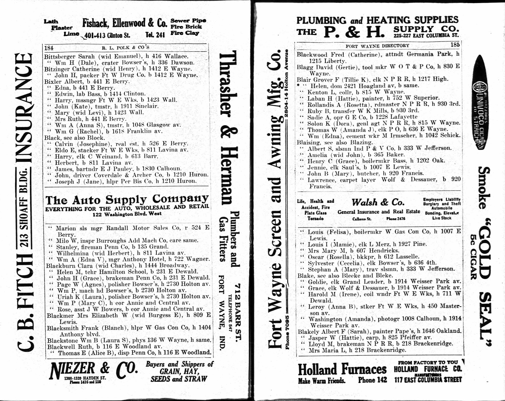

William Green Bixler 1830 - 1915
[ Home ] | [ Calendar ] | [ Surnames Index ] | [ Family History ]William Bixler, the husband of Rachel Sargent (the second cousin four-times-removed on the mother's side of Nigel Horne), was born in Ohio, USA on May 6, 18301 and married Rachel (with whom he had 7 children: Frances J, William Andrew, John B, Thomas Isaac, Rosetta Edna, Lillie May and Lester M) in Fort Wayne, Allen, Indiana, USA on Nov 19, 18622.
Throughout his life, William lived in several places: at St Marys Avenue, Fort Wayne, Indiana on Jun 15, 18803; in Allen on Jun 1, 19004; in Fort Wayne on Apr 15, 19105; and at 1618 Franklin Avenue, Fort Wayne, Indiana in 1914.
He died on Apr 14, 1915 in Fort Wayne1 and was buried there at Prairie Grove Cemetery after Apr 14, 19151.
Children
- Frances J was born c. 1865
- William Andrew was born on Jul 17, 1868
- John B was born on Dec 22, 1872
- Thomas Isaac was born on Mar 15, 1874
- Rosetta Edna was born c. 1876
- Lillie May was born on Aug 21, 1878
- Lester M was born c. May 1884
Citations
- U.S., Find A Grave Index, 1600s-Current Ancestry.com Operations, Inc.
- Indiana, Marriages, 1780-1992 - Findmypast
- Us Census 1880 - Findmypast (was age 40 and the head of the household)
- US Census 1900 - Findmypast (was the head of the household)
- US Census 1910 - Findmypast (was age 76 and the head of the household)
Media
Rachel Sargent - William Bixler

Rachel Sargent - William Bixler - 1914 directory

Rachel Sargent - William Bixler - 1910 census

William Bixler - death certificate

Indiana, Marriages, 1780-1992 - R_328343589
Indiana, Marriages, 1780-1992 - R_328040097
1900 US Census Transcription - USC-1900-004118576-00432-056
United States Marriages Transcription - FS-MAR-31894802-1
United States Marriages - FS/MAR/32627787/1
United States Marriages - R_1072264341
US Census 1910 - USC/1910/004971197/01124/026
Family Tree

Generated by ged2site. Last updated on Nov 13, 2024